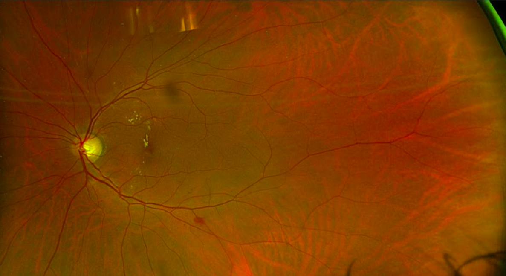
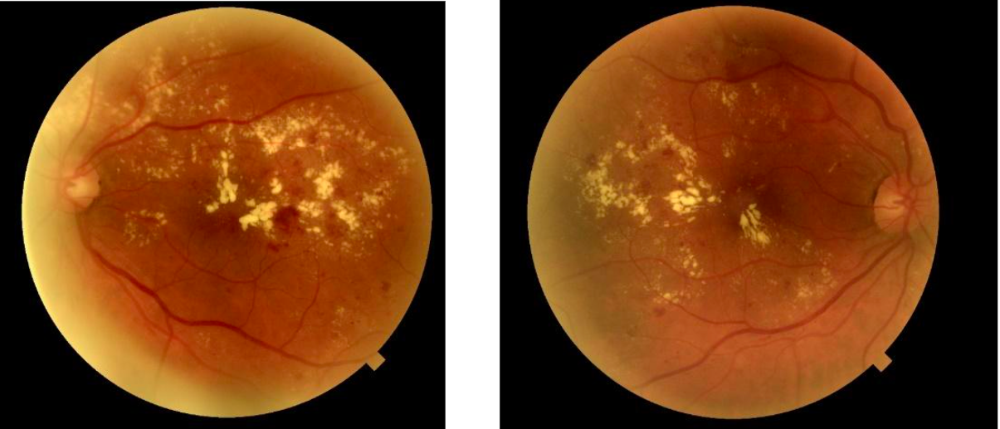
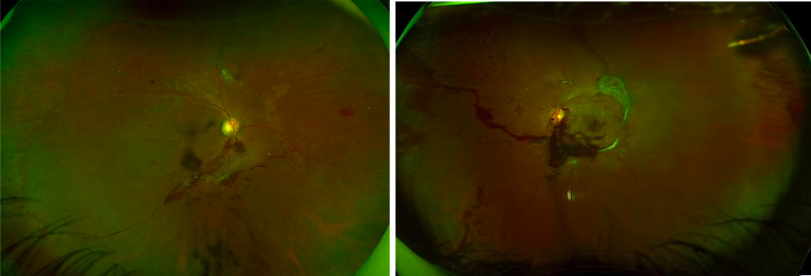
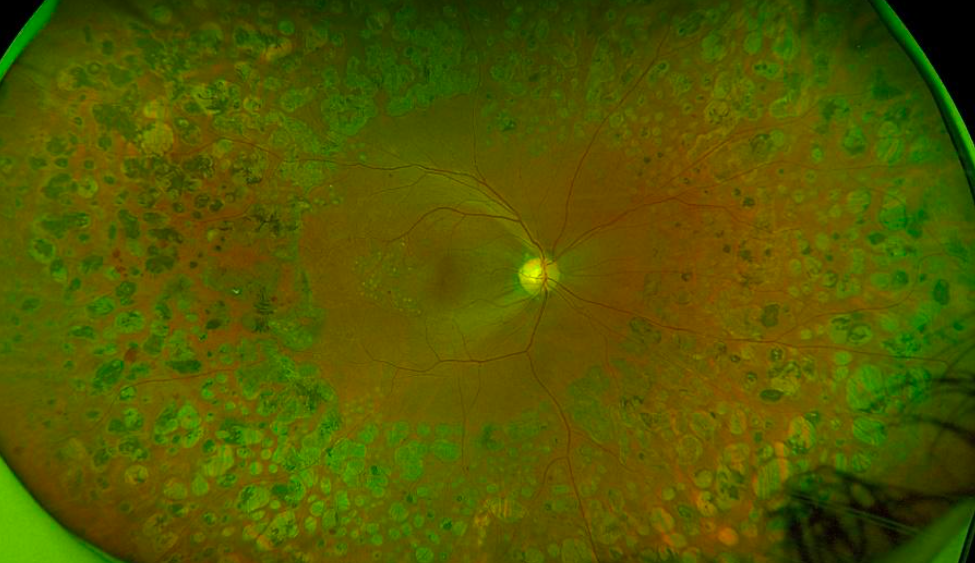

GÖZ, şeker hastalığının en önemli hedef organlarından biridir.
Şeker hastalığı hem gözün ön segmentine hem de arka segmentine zarar verebilir
buna bağlı olarak diyabette çok farklı görsel yakınmalar olabilir.
Kalıcı görme kaybına neden olabilen DİYABETİK RETİNOPATİ (diyabete
bağlı retina
hasarı) diyabetin en sık görülen ve en önem verilen komplikasyonudur, özellikle orta
ve ileri yaş bireylerde önemli bir körlük nedenidir.
Gözlerimin etkilendiğini nasıl anlarım?
Diyabetik retinopati erken dönemlerde sessiz seyreder ve bulgu vermez!

Hastalık ilerlediğinde ise;
Görmede azalma, eskisi gibi net görememe

Siyah uçuşmalar, kurum yağması görünümü, perde inmesi, ağır görme kaybı olabilir

İdeali henüz kalıcı hasar gelişmeden diyabetik retinopatinin tespit edilmesi ve gereken önlemlerin alınmasıdır!
Ne zaman göz kontrolüne gitmeliyim?
- Yapılacak düzenli göz kontrolleri, olası görme kayıplarının önlenmesi adına çok önemlidir!
- Tip 2 Diyabette tanı kesinleştiğinde ilk göz taraması yapılmalıdır.
- Tip 1 Diyabette ise ilk muayene tanı kesinleştikten sonraki 5 yıl içinde yapılmalıdır.
- Sonrasında her iki diyabet tipinde de yılda bir kez kontrol gereklidir.
- Retina hasarı varlığında ise hasarın şiddetine göre kontrol aralıkları değişir.
- Hamilelik, sistemik kortizon kullanımı, ergenlik gibi hayatın bazı önemli dönemlerinde daha sık kontrol gerekebilir.
Göz sağlığımı korumak için neler yapmalıyım?
Tanımlanmış risk faktörlerinizi azaltın
• Yüksek kan şekeri düzeyleri, yüksek kan kolesterol ve lipid seviyeleri
• Sistemik kan basıncının yüksek olması
• Yüksek vücut kitle indeksi yani fazla kilo, obezite
• Sigara kullanımı
• Sedanter yaşam, hareketsizlik diyabetik retinopati gelişim riskini artırır!
Bu faktörleri azaltacak yaşam tarzı, beslenme düzeni, periyodik kontroller, diyabetik retinopati gelişim riskini azaltacaktır.
Bir şikayetiniz olmasa bile düzenli göz kontrollerinizi
aksatmayın
Hastalık süresi uzadıkça retinopati gelişme riski artar. Özellikle uzun zamandır
diyabet hastalığı olanlar göz kontrollerini aksatmamalıdır.
Diyabete bağlı retina hasarının tedavisi mümkün müdür?
Diyabetik retinopatinin tipine göre farklı tedavi yaklaşımları mevcuttur.
Diyabete bağlı makula ödeminde, göz içine ödemin gerilemesini sağlayan ajanlar
enjekte edilir.
İleri evre diyabetik retinopatide oluşan sağlıksız damarların gerilemesini sağlamak
için retinaya laser fotokoagülasyon tedavisi uygulanır.

Dirençli göz içi kanamalar, çekintiler varlığında ise gözün arka segmentine yönelik
cerrahi girişimler yapılabilir.
Ne kadar erken tanı konulursa tedaviye alınan yanıt da o kadar iyi olur. Aynı
şekilde
iyi diyabetik regülasyon tedaviye alınan yanıtı olumlu etkiler.
Hem genel vücut sağlığınız, hem de göz sağlığınız için önerimiz hastalığınızla
dost olmaya çalışıp düzenli kontrollerinizi ihmal etmemeniz!!!!